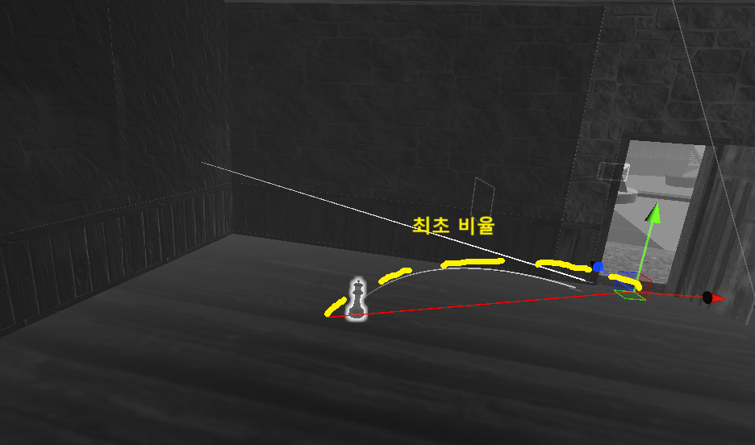
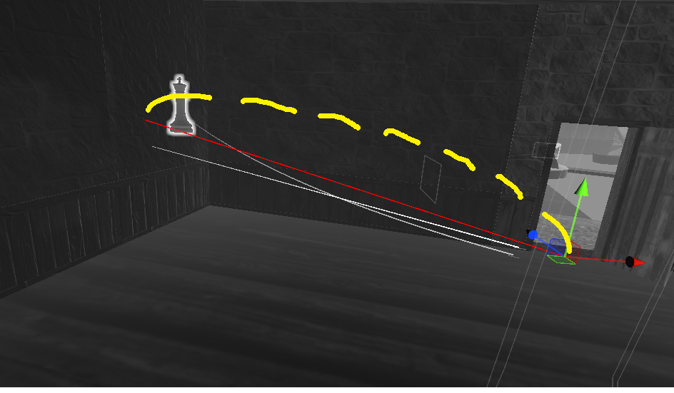
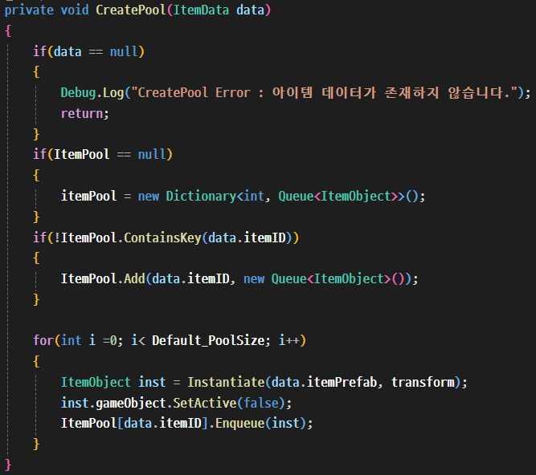

모네 : 잃어버린 아틀리에
| 목적 | 아트앤메타(artnmeta.com) 기업협약 VR 프로젝트 |
|---|---|
| 장르 | VR 퍼즐 어드벤처 |
| 플랫폼 | VR (Oculus Quest 2) |
| 개발 환경 | Unity3D, XR Interaction Toolkit |
| 개발 기간 | 24.06.03 ~ 24.08.11 (약 2개월) |
| 개발 인원 | 9명 (개발 3, 기획 5, QA 1) |
| 담당 업무 | 개발 팀장 · 구조 설계 · 컨텐츠/시스템 |
| 링크 | YouTube |
1. 크기 착시 기믹 구현
요구사항
Superliminal 스타일의 크기 착시 기믹 구현. (Superliminal 예시: 손에 든 물체를 놓는 순간, 화면에 보이는 크기 그대로 실제 크기가 결정되는 착시 퍼즐)

문제 인식과 인터랙션 재설계
초기 기획 요구사항은 "레퍼런스 게임인 Superliminal의 착시 효과를 구현해달라"는 것이었습니다. 이에 따라 간단한 프로토타입을 제작해 테스트한 결과, 기대한 몰입감이 나오지 않았습니다. 원인은 조준(에임) 방식의 차이였습니다.
Superliminal은 3D FPS라 에임이 화면 정중앙에 고정돼 있어 잡은 물체가 항상 시야의 초점(포커스) 위치에 렌더링되지만, VR은 카메라(시점)와 컨트롤러(에임)가 완전히 분리되어 있어 물체가 화면 중앙, 즉 사용자의 포커스 위치에 오지 않았습니다.
이 착시는 "물체에 대한 시야 포커싱이 유지된다"는 전제가 성립해야 하므로, 물체를 렌즈 앞(화면 중앙)에 고정 배치하고 컨트롤러에서 물체까지 레이를 연결해 "컨트롤러가 잡은 물체가 중앙에 렌더링되고 있음"을 표현하는 대안을 기획에 제안했고, 채택되어 개발을 진행했습니다.
상대 거리 기반 크기 조정 알고리즘
레퍼런스 게임을 분석하며 "왜 착시가 느껴지는가"를 고민했습니다. 답은 원근감이었습니다. 사용자의 포커스가 잡은 물체 자체에 집중돼 있고, 물체의 화면상 크기는 실제로 고정된 채 배경(벽, 바닥 등)과의 상대적 크기·위치 차이만 계속 변하면서 거리감을 착각하게 만드는 것입니다. 이 원리를 구현으로 옮기기 위해 "물체의 화면상 크기(각크기)를 항상 일정하게 유지"하는 것을 목표로 삼았고, 카메라-물체 간 거리가 멀어진 비율만큼 물체의 실제 크기를 키우면 이것이 성립한다는 결론에 도달했습니다. 이 알고리즘이 성립하려면 물체가 항상 같은 화면 위치(렌즈 앞)에 있어야 한다는 점도 함께 확인했습니다.


- 물체를 잡는 순간 카메라→물체 벡터로 레이를 발사해, 가장 먼저 닿는 벽까지의 거리를 기준 거리로 설정
- 이후 레이 거리를 계속 갱신하며 (현재 거리 / 기준 거리) 비율을 계산
- 이 비율로 오브젝트 크기를 조정해, 화면상 크기가 유지되는 것처럼 보이는 착시를 구현
- 기준 거리를 잴 면이 항상 존재해야 하므로, 이 기믹은 벽으로 둘러싸인 실내 공간에서만 성립한다는 전제를 두고 스테이지를 설계했습니다.
실제 동작 방식


2. 인벤토리 시스템
배경 및 요구사항
개발 도중 담당자 변경으로 인벤토리 시스템을 새로 맡게 되었습니다. 이어받은 시스템은 인벤토리 캔버스를 열어 아이템을 드래그&드롭하면 실제 아이템 오브젝트가 캔버스 하위 계층으로 이동하는 방식으로, 아이템 습득 로직이 이 UI 상호작용 안에만 존재하고 별도의 데이터 계층은 없었습니다.
담당을 맡은 뒤 기획 의도와 필요한 시스템을 파악해, 미션 보상처럼 UI를 거치지 않고도 아이템을 지급할 수 있어야 한다는 점과 씬 이동·저장/로드를 위해 인벤토리 상태를 데이터로 관리해야 한다는 점을 확인하고 구조를 다시 설계했습니다.
PlayableData와 MVC 구조 설계
게임 진행 중 사용하는 데이터 집합인 PlayableData를 만들어 싱글턴 매니저로 관리했습니다. 게임 종료 시 직렬화해 저장하고 시작 시 역직렬화로 로드하며, DontDestroyOnLoad로 게임이 꺼지기 전까지 유지됩니다.
인벤토리 데이터는 슬롯 데이터(슬롯 ID, 아이템 ID, 개수) 구조체 배열로 관리하고, 아이템 삽입 시 아이템의 key를 확인해 슬롯 데이터에 할당합니다. 미션 완료로 자동 습득되는 경우도 Inventory UI(View)를 거치지 않고 PlayableData(Model)에 key 값만 할당하도록 하여, 아이템 지급 로직이 View 상태와 무관하게 동작하도록 했습니다.
추가 개선
1. 최적화: 오브젝트 풀링
실제 오브젝트를 드래그&드롭하는 방식에서 아이템 key 값을 확인해 생성/삭제하는 로직으로 변경되었습니다. 잦은 조작으로 무분별한 객체 생성/삭제에 의한 GC 과부하를 우려해 오브젝트 풀링 방식을 사용했습니다.

2. 인벤토리 UI 가림 현상 보완
VR 특성상 카메라와 인벤토리 UI가 모두 월드 공간에 배치되는데, 손에 든 오브젝트가 카메라(렌즈) 바로 앞에 고정되는 구조(1)다 보니 인벤토리를 열면 든 오브젝트가 UI를 가리는 문제가 있었습니다.
인벤토리가 열리면 손에 든 오브젝트 크기를 인벤토리 전용 크기로 줄이고 닫으면 원래 크기로 복구하는 로직을 추가했습니다. 크기가 급격히 바뀌지 않도록 Lerp로 서서히 전환되게 처리했습니다. (기획 요구사항은 아니었지만 방식 제안 후 받아들여져 최종 적용했습니다.)
결과